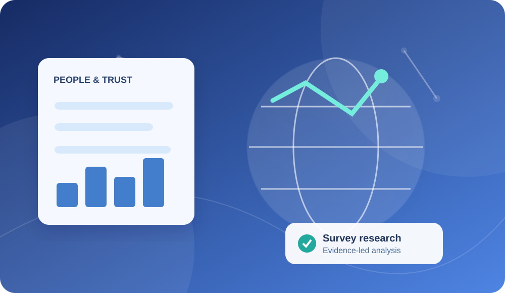

Social Trust, Institutional Confidence & Subjective Wellbeing
An end-to-end statistical study using the 2024 General Social Survey to examine relationships between interpersonal trust, confidence in institutions, and reported happiness among adults in the United States.

The question behind the analysis
Does interpersonal trust remain associated with subjective wellbeing once demographic characteristics and survey design are considered?
This case study presents the study design, statistical approach and findings in a clear, independently reviewable format. Methodological qualifications are stated alongside the results.
What the study found.
Reported “not too happy” among respondents who said you cannot be too careful
Reported “not too happy” among respondents who said most people can be trusted
Adjusted odds ratio for the main trust contrast (95% CI 0.71–1.66)
Reported ‘not too happy’, by trust group
Survey-weighted percentages, among respondents answering both items. Not a causal comparison.
Figures from the reported research results. Visual scales are labelled; bar lengths do not show statistical uncertainty.
How the research was carried out.
- Data-source verification and exclusion of the 677 supplementary AmeriSpeak cases from the primary sample
- Survey routing and valid-response audits, with 946 valid interpersonal-trust responses and 936 respondents answering both trust and happiness questions
- Weighted descriptive distributions using WTSSNRPS, stratification and primary sampling unit information
- Ordinal regression with age, recorded sex, educational attainment and marital status, supported by sensitivity checks and an unweighted benchmark
What the research produced.
Independent analysis of publicly available survey data. Source records are downloaded from NORC rather than republished here.
Go deeper.
Read the results here first. Supporting analytical tables and code are available for anyone who wants to inspect the technical material.
Read technical research report Inspect model results Get reproducible analysis code Official NORC survey sourceNeed a similar analysis?
Tell me about your research question, dataset or project deliverables.